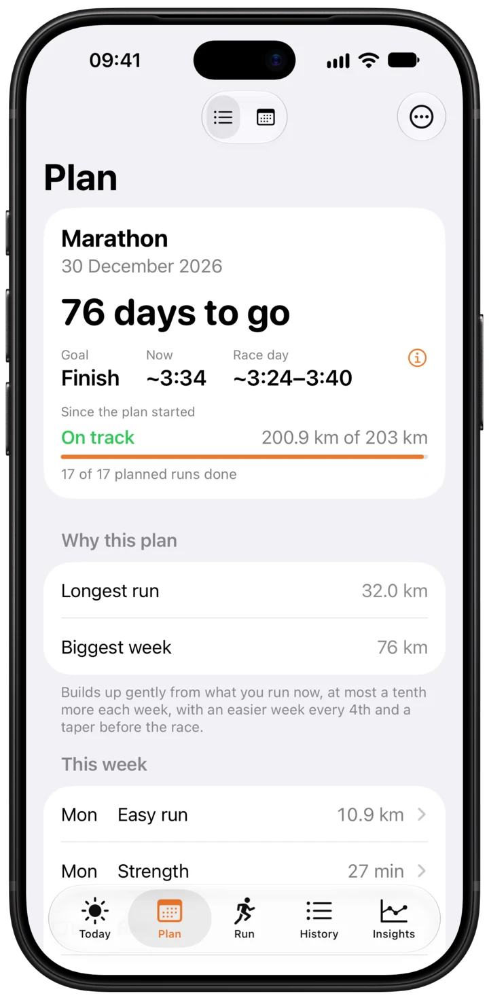
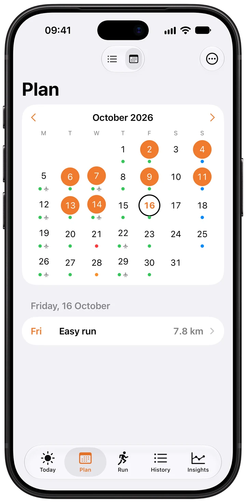
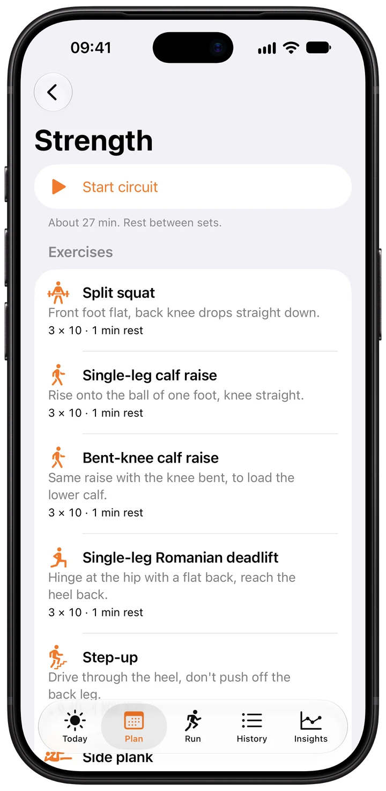

A plan that starts where you are.
Taperwise reads your running history from Apple Health, or imports GPX, TCX, FIT and Strava exports. Then it builds a 12 to 30 week plan for 5K, 10K, half marathon or marathon: Base, Build, Peak and Taper. Your goal, today’s fitness and an honest race-day range sit side by side.
- Volume grows at most about 10% a week
- Every fourth week is a recovery week
- Long runs grow at most 10%, capped at 35 km or 3.5 hours

Every session, on a calendar.
See the plan week by week or month by month. Filled days are runs you did, coloured dots are what comes next. Tap a session for its steps, target paces, heart rate zone and, on long runs, a drink and gel plan.
Listens to your body.
Heart rate variability, resting heart rate, sleep and training load decide whether today is green, yellow or red. A yellow morning trims the session, three red days bring a deload, and missed runs are never made up. Sore legs or a cold? Tell Taperwise and the plan pauses, then eases you back in.

Strength that keeps you running.
Two short sessions a week of split squats, calf raises and step-ups, the moves linked to fewer running injuries.1 A guided circuit counts sets and rest on iPhone or Apple Watch and saves to Apple Health.